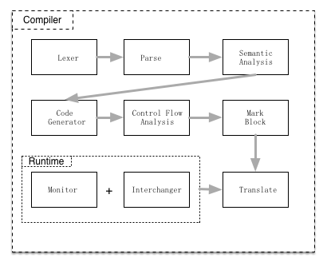
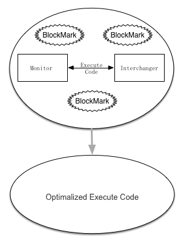

PL Meets AI
4/Jun 2015
编程语言是很善变的，一旦用其编程，它便不再是你头脑中的那个语言。
上面这句话是我瞎掰的，不过确实是最近的一些体会。编程语言是高度形式化的产物，一旦用于实际生产，便免不了受到现实条件的制约。比如下面这个条件语句
if c1:
s1
elif c2:
s2
else c3:
s3
三个分支在逻辑上是平行的，本来无所谓先后，但在现在语言实现大都是从前往后依次判断每个分支。如果c1, c2, c3实际发生的概率为1％，1%，98%，很显然这种写法给每次执行都增加了不必要的判断。
下面这种代码片段也是随处可见的：
for i in range(n):
if i == 0:
coldStart
else:
doSth
程序员为了保持代码的优雅性，会把一些初始启动的代码放在循环体的内部，有时保持这种优雅性也挺好，但遇到性能要求较高的场景时，这种代码积少成多变化成为瓶颈。
举上面两个例子，是说明在实际编码过程中，会人为地产生一些顺序性和代码结构上的依赖关系。老程序猿会告诉刚入职场的新手说，你应该把最先发生的事情放在最开始，或者说先针对一般场景编程，然后再处理特许情况。这种编程策略一定程度上可行，但对程序员的依赖较高，在具体的行业里，很大程度就要看对业务的理解程度是否深刻。“人肉优化”往往周期较长，缺乏系统性，而且需要大量的试错成本。
那么问题来了，我们能否先写一个一般的代码，然后采集一些执行期间的状态数据，然后让程序自动进化呢？PL和AI是计算机科学的两大学科分支，如果将AI的方法引入PL领域，应该会带来一些根本性的变革。我设想的一种结合方式如下：
- 给编译器增加一个监控模块，以代码块为单位，记录每个代码块的执行情况；
- 再增加一个调整模块，结合代码块之间的结构关系，去做一些块间结构调整，调整过程中唯一的不变式是程序的执行语义。
由于这些模块本身也是具有开销的，所以可以做成可插拔的，等程序进化得足够好时，便可以关掉这些模块。整个执行流程如下：

其中，markBlock作用是标记代码块，可能会在原来程序基础上增加一些类似于脚手架的东西。Monitor和Interexchanger即上面提到的两个模块，将其作为Runtime的一部分编译进源程序。 在程序运行期，Monitor对程序状态进行监控，Interexchanger会在达到某些条件时对程序结构进行微调。当程序被优化得足够好(例如很长时间没有发生调整)，便可以拆掉BlockMark脚手架，卸去Monitor和Interexchanger两大器械。

我创建了ProPro来实践这个想法，希望通过写写画画，思路可以越来越清晰。等到有些眉目的时候，再进行一次新的总结。